今週は柿三昧です。
2018/10/27
柿を収穫しました。
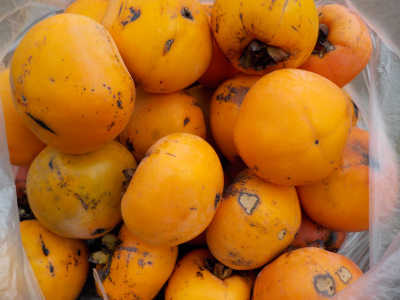
たぶん来週も沢山収穫して沢山食べる予定。
甘いのでやっぱ太るのかな。
2018/10/27
柿を収穫しました。

たぶん来週も沢山収穫して沢山食べる予定。
甘いのでやっぱ太るのかな。
2018/05/19
普段気にしていないですが、ちょっと観察してみました。
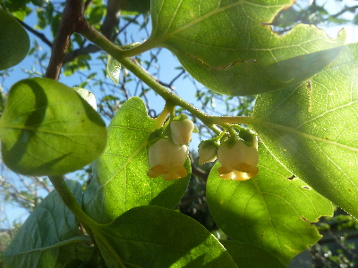
目立たない花ですね。
小さくてかわいいですが、あまり気にはならないです。
実になると気になるんだけどな。
2017/10/14
気が付いたら柿が熟れていました。
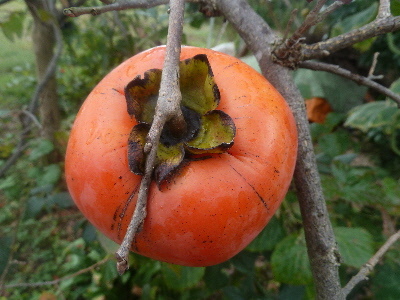
もうちょっと早く収獲すればよかったかな。
これからしばらく柿が沢山食べれそうです。
2015/09/27
今年は家の柿が不作です。
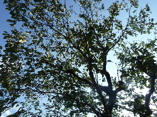
ここまで実が出来てないのは、なかなかない気がします。
去年が豊作だったので、裏になったのかなー。
2014/10/18
柿がいい色になったので収穫です。
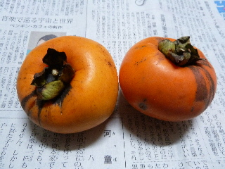
食べてみたら、あまり甘くなかったです。
まだ早かったかな？
来週くらいから沢山実って、沢山食べれそうです。
2014/09/27
沢山実が付いて、木がしなっています。
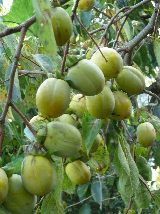
今年は干し柿が沢山食べれそうです。
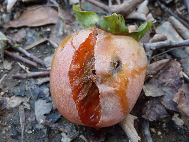
落ちちゃった柿もいっぱいあって、そこらへんじゅう柿の腐敗臭がしています。
あんまり落ちないでほしいな。
2014/07/26
柿の木にミンミンゼミが沢山いました。
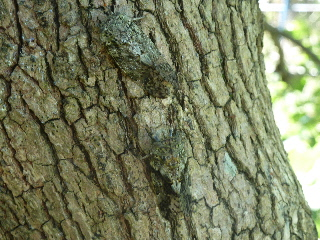
何がいいんでしょう？
木と同化して、目立たないからいいのかな？
この柿の木には10匹以上セミガいたと思います。
2013/10/20
柿の収穫が本格的になりました。
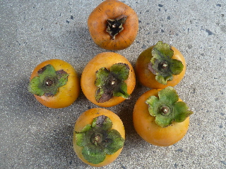
今年はサイズが小さいのがいっぱい出来ました。
渋柿は数が少なかったですが、甘柿は沢山食べれそうです。
2013/09/28
秋が来ましたねー。
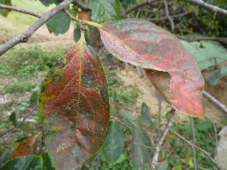
これから寒くなるなー。
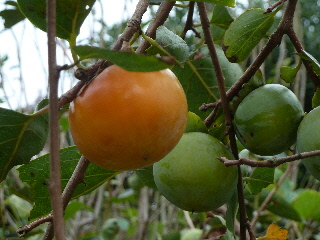
もう色づいた柿がありました。
食べてみたんですが、あんまり甘くなかったです。
ちょっと傷がついていたので、それで速く色づいたみたいです。
2013/09/16
台風で柿が沢山落ちました。
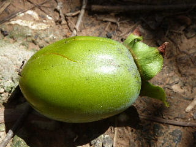
台風じゃなくても柿はよく落ちますけどね。
畑仕事じゃないよ。